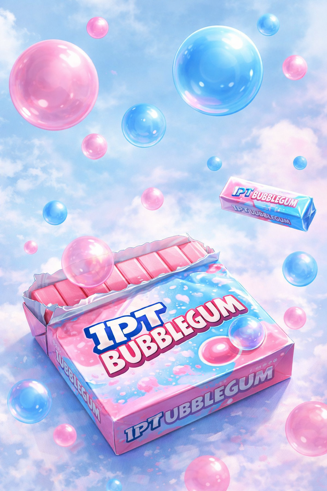

A nervous system cannot survive on threat analysis alone.
Humans do not stabilize through fear-monitoring forever.
Eventually:
Without beauty, joy, and wonder… awareness systems collapse into sterile surveillance.
IPT is not meant to turn reality into a prison scanner.
It is meant to restore perception.
The interruption of total mechanization
Beauty creates pauses in narrative domination.
For a moment:
This can happen through:
Beauty reminds the organism:
🪟 reality is larger than the current panic loop.
Not every meaningful thing is argumentative.
Not every valuable thing needs defending.
The anti-rigidity mechanism
Rigid identity systems struggle with play.
Play introduces:
Joy disrupts mechanical certainty.
That is why:
can become psychologically important.
Not because they “solve” panic…
but because they loosen the nervous system’s grip.
⚠️ A person laughing is often temporarily less trapped.
The expansion layer
Wonder slows certainty velocity.
Panic says: “I already know what this means.”
Wonder says: “Maybe reality is larger than my current explanation.”
Wonder restores:
It reduces total ideological closure.
A person in panic demands immediate certainty. A person in wonder can tolerate ambiguity long enough to think.
Awareness systems can accidentally become:
This creates:
Beauty, joy, and wonder help prevent awareness from becoming another cage.
Sometimes absurdity is protective.
The strange reel. The ridiculous mascot. The neon clown. The impossible combination. The dreamlike edit that makes no logical sense.
These can function as:
Not all nonsense is meaningless.
Sometimes nonsense restores breathing room.
A system that only analyzes fear eventually becomes fear-shaped.
A system that still contains:
retains its humanity.
🧰 IDENTITY PANIC TOOLKIT 👁️ Awareness without dehumanization 🎠 Browse freely.
Return to Assorted Remainders Filing Cabinet